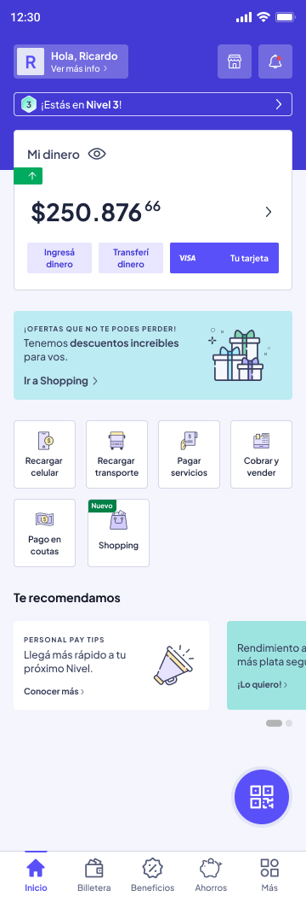
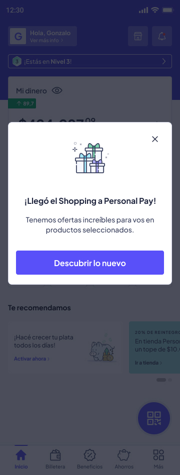
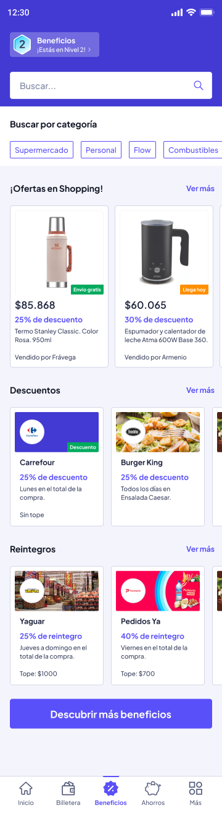
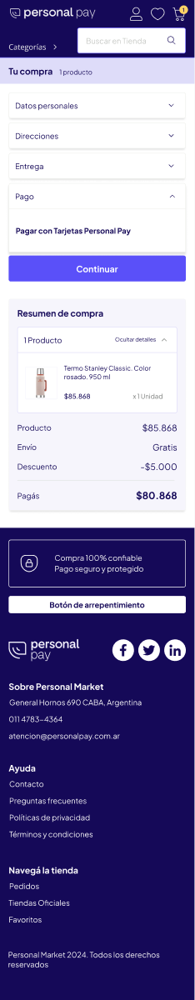
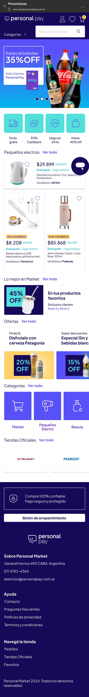

CASO DE ESTUDIO UX/UI
Personal Pay — Argentina
Discovery, research y prototipado de un Marketplace con acceso instantáneo dentro de la billetera —no llegó a producción en su momento, pero sentó las bases de lo que hoy está en producción.
Rol
UX / Product Designer
Duración
3 meses
Año
2024
RESUMEN
Personal Pay buscaba traccionar a un segmento que quedaba fuera del radar del producto: personas no bancarizadas y sin tarjeta bancaria. La hipótesis era acercarlas al ecosistema a través de préstamos, y para eso se evaluó ofrecer un ecommerce propio dentro de la billetera.
Diseñar un Marketplace embebido en Personal Pay que aproveche que el usuario ya estaba autenticado en la app, eliminando por completo la necesidad de loguearse para comprar.
LA OPORTUNIDAD
Un segmento grande de usuarios sin tarjeta bancaria quedaba fuera de las ofertas de crédito y consumo tradicionales.
Personal Pay ya tenía a esos usuarios dentro del ecosistema, autenticados y activos en la app.
Al no requerir un nuevo login, la fricción de entrada al Marketplace era prácticamente cero.
PROCESO
Prototipo construido en paralelo con los equipos de Negocio y Producto, para validar la propuesta antes de comprometer desarrollo.
EL PROTOTIPO
Acceso directo desde la home, un aviso invitando a descubrir el Marketplace, la integración de beneficios, el catálogo embebido dentro de la propia app y el checkout hasta completar la compra.

Acceso directo — Home
Entrada al Marketplace desde la pantalla principal, sin pasos extra

Popup de anuncio
Descubrimiento del Marketplace dentro del flujo habitual de la app

Integración de beneficios
Promociones y beneficios integrados a la experiencia de compra

Checkout
Resumen de compra y pago con Tarjetas Personal Pay, sin salir de la app

El Marketplace embebido, con el catálogo accesible directamente dentro de la billetera y sin necesidad de un nuevo login.
QUÉ PASÓ
El proyecto pasó a otra unidad de negocio dentro de la compañía: tenía más sentido que viviera bajo el paraguas de Personal (móvil, celulares, televisión) que como un segundo ecommerce compitiendo dentro del mismo grupo. Lo que armamos en este prototipo —el acceso sin fricción de login aprovechando una base de usuarios ya autenticada— fue el punto de partida conceptual de lo que hoy está en producción.
APRENDIZAJES
Diseñar aprovechando que el usuario ya estaba logueado en la app fue el insight que más valor generó, y el que terminó trascendiendo al proyecto original.
Que el proyecto se reubicara en otra unidad de negocio no fue un fracaso: fue la decisión correcta para evitar canibalizar recursos con un ecommerce duplicado.
Prototipar en paralelo con Negocio y Producto permitió chequear la hipótesis de mercado sin esperar a tener una solución cerrada.
RECORRÉ LOS CASOS